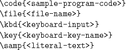
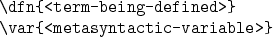
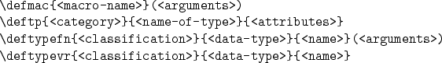
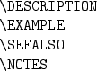
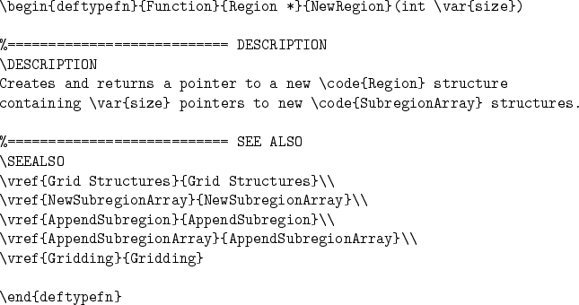
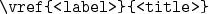
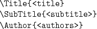
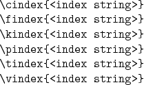
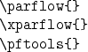

In this section, we discuss the various commands and environments defined in parflow.sty and parflow.perl. Many of these were taken from the Texinfo package.
The following commands are verbatim-like commands used to format
different kinds of text:

These commands handle the following special characters verbatim:
These special characters are not handled verbatim:
The special characters $ % may be printed by escaping with a \.
The special characters # & _ are already handled verbatim, but may
also be printed by escaping with a \.
The reason these environments are not fully verbatim is mainly
due to limitations in the LaTeX2HTML package.
The next commands are also used to format different kinds of text,
but do not print any special characters verbatim:

The following environments are used to format descriptions of macros,
data types, typed functions, and typed variables, respectively:

(More details may be found in the Texinfo documentation.)
Within these def* environments, several description
subsections are available.
They are:

For example, the NewRegion reference (§ 11.1.6)
in this manual was created by typing the following:

The command

(for ``verbose reference'') in the example above, prints the reference
number of <label>, the <title> text in brackets, and
prints the page number in the printed manual.
Several commands and environments also exist for formatting the title
and coyright pages of the manuals.
The title page is created via the TitlePage environment.
Within this environment, the following commands are allowed:

The copyright page is created via the CopyrightPage environment.
The index commands of Texinfo will take some work to mimic in
the style files.
For the time being, the following placeholders exist:

These commands currently only change the font and are used within
the index command as in the following example of a
function index call:
There are also macros available for writing , ,
and in a consistent manner in both the printed and online
versions of the manuals.
These commands should be invoked as follows:

Leaving the {} characters off may cause formatting problems,
so it is strongly recommended that you invoke these commands in this
manner.
For information on how to use the command

to provide help info for GUIs,
see § 3.1.2.